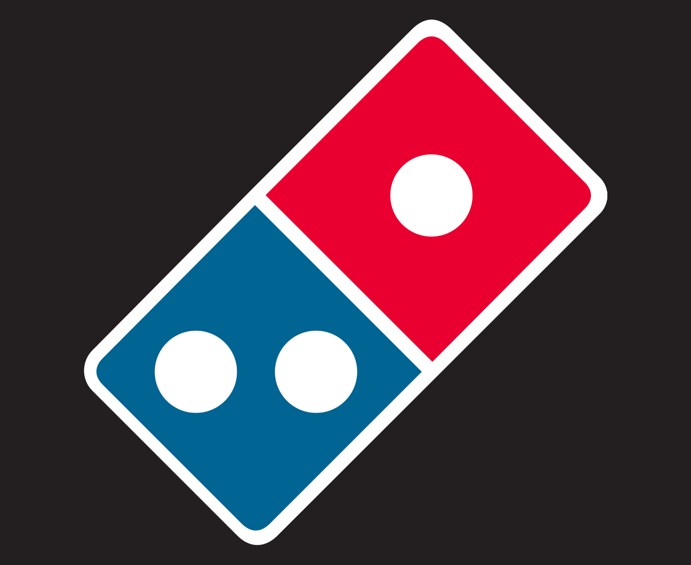
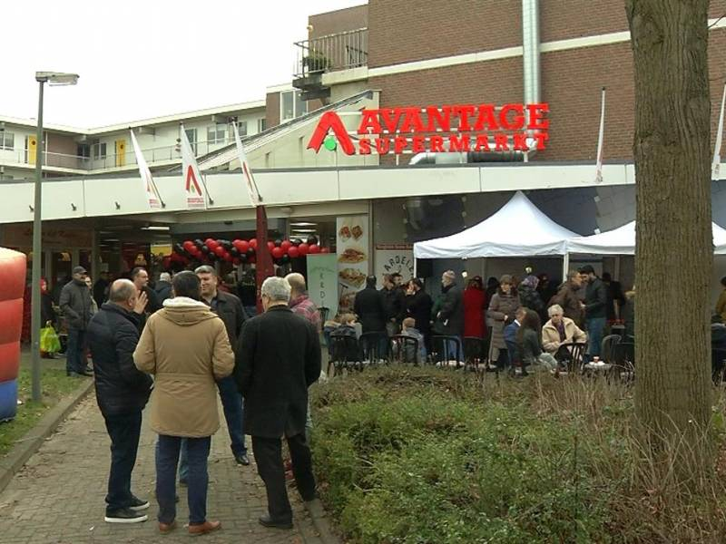

- Home
Als bijbanen heb ik bij Domino's gewerkt, maar daar bevalde het me niet echt, vanwege het lage loon, en ik heb bij een supermarkt gewerkt genaamt Avantage. Maar daar ben ik ook gestopt omdat school weer begon, en ik liever niet school en werk tegelijk heb. Ik heb ook 2 weken lang stage gelopen bij een basisschool voor de middelbare school. daar heb ik ook best veel geleerd over hoe het gaat als leraar zijnde. Bij de bijbaantjes heb ik geloord hoe het is om te werken, en hoe vermoeiend het kan zijn. Het was wel leuk om te weten hoe het is.